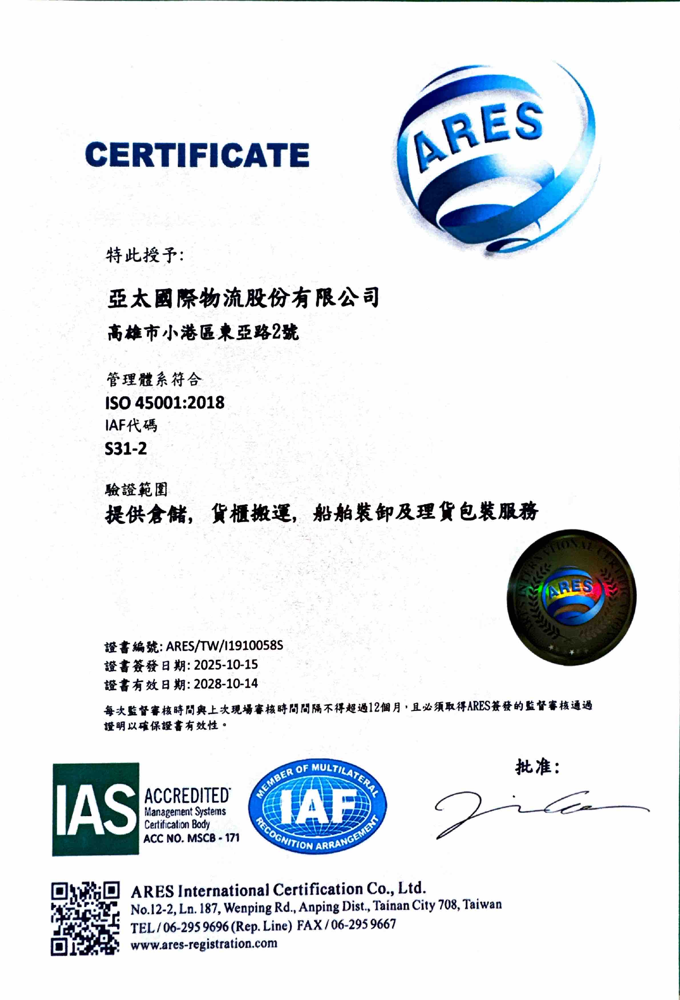

ISO 45001
- 職業安全衛生管理系統驗證通過
亞太重視每一位進入營運場域人員的健康、安全與福祉，無論是員工、承攬夥伴、訪客或客戶。面對貨櫃場、倉儲、機具維修及車輛往來等不同作業情境，亞太將風險辨識與安全要求融入日常作業規劃與現場管理之中。
我們也透過5S管理、動線規劃、設備維護與作業環境改善，持續打造整潔、有序且可靠的工作場所，降低潛在風險，兼顧人員安全與營運品質。
亞太每年皆通過 ISO 45001職業安全衛生管理系統，以國際標準把關工作環境的安全與人員的健康。
在員工健康照護方面，亞太提供多項具體措施：
PROFESSIONAL QUALIFICATIONS
本區彙整本公司人員目前已取得的職業安全、特殊作業及物流場站相關專業證照與資格。
